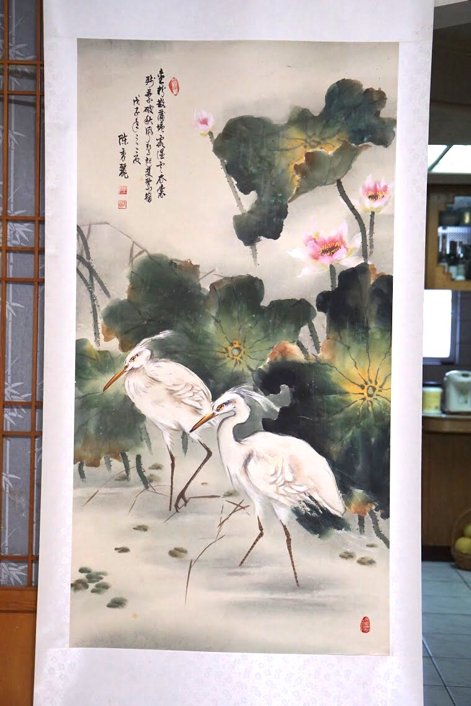

CHEN HSIU-LI · SELECTED PAINTINGS
筆下有情，
花鳥自成天地。
陳秀麗女士嶺南畫作選集
從一枝花、一雙鳥，到山間奔流的泉瀑，
循著筆墨與設色，走進自然的生意。
二十幅作品 · 四種觀畫視角

THE ARTIST
陳秀麗 女士
清朝秀才王作霖之孫女，
師承嶺南派大師畫家黃磊生。
這份畫冊收錄花鳥、花卉、山水與走獸題材。濃淡相生的墨色、明亮的花羽與寬舒的留白，讓草木禽鳥各有姿態，也讓觀者在畫面中尋得片刻安靜。
畫家簡介依家屬提供資料編錄。作品名稱為本畫冊擬題；「作畫理念」為依畫面撰寫的意境賞析，並非畫家親述。原題、年代與尺寸尚待考訂。
THE COLLECTION
一畫一境
看花開，聽水聲，讀筆墨間的情意。
沒有符合的作品，請試試其他關鍵字。
ABOUT THIS ALBUM
將畫意，留在日常。
本集依原始畫冊整理為二十幅不同作品；柳岸鴛鴦的重複照片合併收錄。
保留作品照片原貌，可點選畫作閱讀完整賞析及放大觀賞。